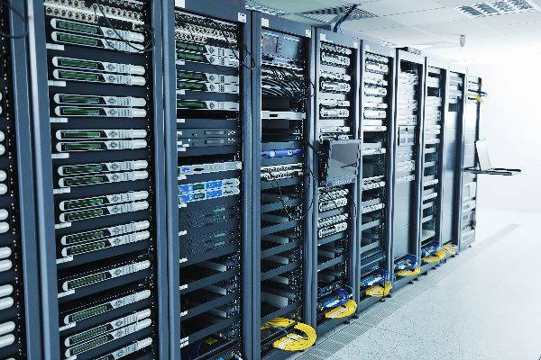
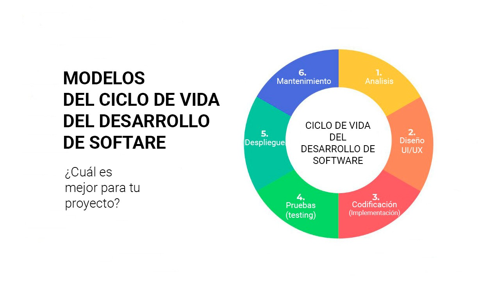

¿Dónde podemos trabajar en el Perú?
Campo Profesional para Ingenieros Informáticos
Los ingenieros informáticos egresados de la Universidad Nacional Federico Villarreal cuentan con un perfil altamente competitivo que les permite desempeñarse en los sectores estratégicos más importantes del mercado peruano. Su formación integral abarca la administración, el diseño y la implementación de soluciones tecnológicas escalables, preparándolos tanto para la gestión pública como para la industria privada en un entorno globalizado.
En el panorama actual, las organizaciones demandan especialistas capaces de administrar hardware profesional y robustas redes de comunicación de datos. Los servidores web locales y los centros de datos distribuidos en el país alojan sitios web corporativos dinámicos, procesan transacciones críticas en tiempo real y envían páginas informativas de forma segura a millones de usuarios que las solicitan a diario en todo el territorio nacional.

Asimismo, el campo laboral se extiende hacia áreas de alta especialización como el soporte técnico avanzado de sistemas operativos, la arquitectura en la nube, el aseguramiento de la calidad y la dirección de unidades de desarrollo de software. Los profesionales lideran células de trabajo dedicadas al diseño y optimización de bases de datos masivas, garantizando la integridad, la disponibilidad y la confidencialidad de la información, activos fundamentales donde un ingeniero informático opera de manera eficaz dentro del dinámico mercado peruano.
